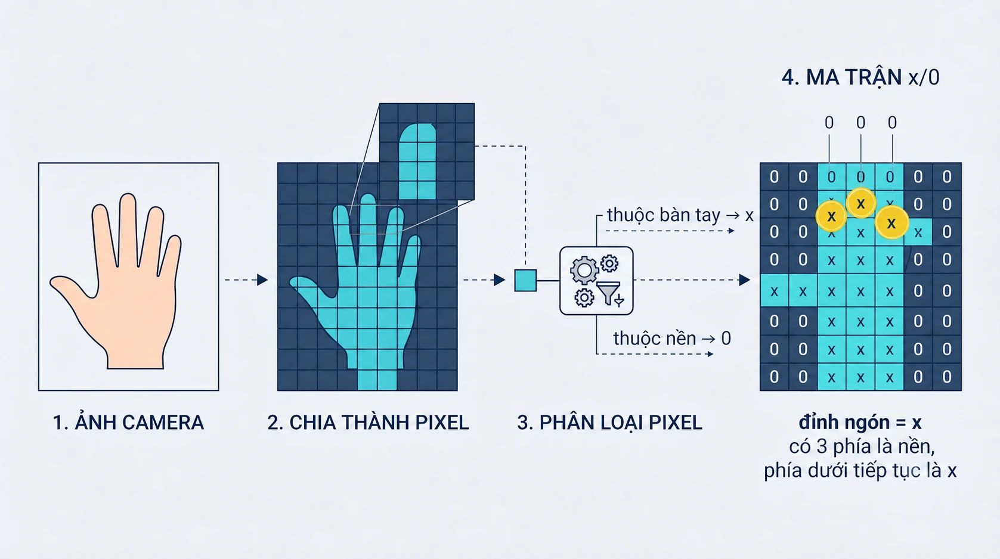

1 · ẢNH CAMERA
Camera vừa chụp được gì?
Em nhìn thấy bao nhiêu đầu ngón đang hướng lên?
2 · NHÌN GẦN HƠN
Ảnh được ghép từ những ô rất nhỏ
pixel = một ô nhỏ của bức ảnh
3 · MÁY CHUẨN BỊ DỮ LIỆU
Từ ảnh camera đến ma trận x/0

ẢNH→TÁCH NỀN→PHÂN LOẠI→MA TRẬN
MÁY LÀM SẴNDỮ LIỆU GIAO CHO EM
4 · ĐỌC MA TRẬN
x thuộc bàn tay · 0 thuộc nền
xpixel thuộc bàn tay
0pixel thuộc nền
Bỏ hình bàn tay đi, bảng vẫn giữ lại thông tin cần thiết.
5 · BÀI TOÁN CỦA EM
Ba đầu ngón nằm ở ô nào?
[1, 1][1, 4][1, 7]
6 · PHÓNG LỚN MỘT ĐỈNH
Một ô đỉnh ngón có mẫu gì?
7 · CHẶN MỘT HIỂU LẦM
Đầu ngón hay pixel đứng riêng?
Chọn mẫu là đầu ngón.
8 · QUÉT TỪNG Ô
Quan sát count thay đổi
ĐANG KIỂM TRA[0, 0]
BẮT ĐẦUMáy sẽ đi qua từng ô trong bảng.
count0
9 · CODE VÀ BỘ TEST
Trong đảo thực hành, em sẽ làm gì?
above_is_emptyleft_is_emptyright_is_emptycontinues_belowcả bốn đúng → count = count + 1
test grid→count_fingertips(grid)→so với expected
Pip sẽ gọi cùng một hàm với nhiều ma trận.
1 Nhận ma trận x/02 Viết count_fingertips(grid) để trả số đầu ngón3 Bấm RUN để Pip chạy 5 test
VÀO ĐẢO THỰC HÀNH →